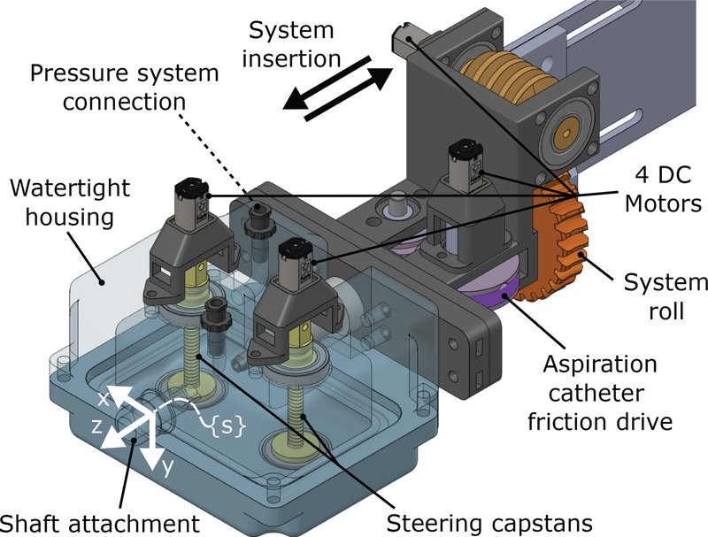

Actuated-tip devices · growing_mangan2025
Growing robot
Hybrid tendon-notched continuum robot + hydraulic everting (growing) robot

1 / 5


- Family
- Actuated-tip devices (actuated-device)
- Devices
- own growing robot (2.67 mm OD, about 8 Fr) that pulls a commercial 5 Fr aspiration catheter (SOFIA); notched base 7.6 mm OD
- Degrees of freedom
- notched base two segments, tendon-driven by 2 capstans; growth by fluid pressure; system roll and insertion
- Push
- Other drives
- Twist
- Rotating drive unit
- Tested up to
- Phantom
- Sim-to-real
- None found — No simulation-trained controller found for this robot.
Testing
- Highest level
- Phantom
- What was tested
- silicone arch and ICA models with two 360-degree loops of 7.3 mm radius; one full deployment in under 10 min with mock clot (Sec. VI-D, S8); no repeated-trial success rate found
- Key numbers
- growth pressure 35-40 kPa; housing withstands 85 kPa; steering error 9.9 +/- 1.2 % and 17.6 +/- 0.7 % of segment length (S8 citing Sec. VI-A); retraction buckles
Mechanism
- Push (translation)
- other: eversion by hydraulic pressure (35-40 kPa) plus linear actuator and friction drive for the aspiration catheter
- Twist (rotation)
- system roll stage
- Device range
- growing robot length 445 mm (S8 citing mangan Sec. III-C)
- Target anatomy
- neuro: type III aortic arch and extremely tortuous ICA benchtop models (mechanical thrombectomy)
Sensing and interface
- Force sensing
- pressure sensor on growth fluid; N.R. for tip force
- Leader and haptics
- no
- Imaging
- N.R.
- Sterility
- N.R.
Size
- Footprint (mm)
- N.R.
- Mass (kg)
- N.R.
Simulation
- Simulation model
- none found in text scanned (kinematics of notched robot and design optimisation reported; no simulator)
- Sim-trained controller
- none found
Versions
- Lineage
- single (T-MRB 2025); 2021: VINE everting (growing) catheter, UCSB/UCSD/Stanford, same team (Li 2021 T-MRB) (Alekseeva 2025 Table 12 row 9, Fig. 19g) (alekseeva2025_design)
Sources
- Serially-Connected Soft Continuum Robots for Endovascular Emergencies · IEEE Transactions on Medical Robotics and Bionics, 2025 · doi:10.1109/tmrb.2025.3583160 [mangan2025_serially]
- The Design of Endovascular Robots for Cardiac Interventions: A Survey · Journal of Field Robotics, 2024 · doi:10.1002/rob.22480 [alekseeva2025_design]
Notes
- Notes
- Affiliations are UCSD/UCSB/Stanford; brief mentioned UCSD/Stanford.
This record
- Read level
- full — full text downloaded; abstract, intro, hardware sections read, results via S8
- Picture
- mangan2025_serially Fig. 5 (CAD of the watertight actuation subsystem) ↗ — licence: publisher copyright (IEEE); grade C
- Picture changes
- native extract, no edits (labels and leader lines kept: they cross the motors, capstans and housing)
- Found by
- actuated-tip: Search of actuated-tip and magnetic devices.
- Data
- JSON · YAML:
records/robots/growing_mangan2025.yaml - Correction
- Suggest a correction [repository not created yet]